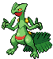

-
Cyndaquil Nº0155

Cyndaquil se protege acendendo as chamas em suas costas. As chamas são vigorosas se o Pokémon estiver com raiva. No entanto, se estiver cansado, as chamas crepitam intermitentemente com combustão incompleta.
-
-
Sceptile Nº0254
As folhas que crescem no corpo de Sceptile são muito afiadas. Este Pokémon é muito ágil - salta por todos os ramos das árvores e salta sobre o seu inimigo por cima ou por trás.
-
-
Rayquaza Nº0384

Dizem que Rayquaza viveu centenas de milhões de anos. Lendas permanecem de como ele pôs fim ao confronto entre Kyogre e Groudon.
-
-
Mewtwo Nº0150

Seu DNA é quase o mesmo de Mew. No entanto, seu tamanho e disposição são muito diferentes.
-
Gardevoir Nº0282

Para proteger seu treinador, ele gastará todo o seu poder psíquico para criar um pequeno buraco negro.
-
Gyarados Nº0130

Uma vez que aparece, ele entra em fúria. Ele permanece enfurecido até destruir tudo ao seu redor.
-
Pikachu Nº0025

Quando está com raiva, descarrega imediatamente a energia armazenada nas bolsas de suas bochechas.
-
-
Groudon Nº0383

Groudon é dito ser a personificação da própria terra. As lendas falam de seus muitos confrontos contra Kyogre, pois cada um buscava ganhar o poder da natureza.
-
-
Arceus Nº0493

De acordo com as lendas de Sinnoh, este Pokémon surgiu de um ovo e moldou tudo o que existe neste mundo.
-
Giratina Nº0487

Diz-se que este Pokémon vive em um mundo ao contrário do nosso, onde o conhecimento comum é distorcido e estranho.